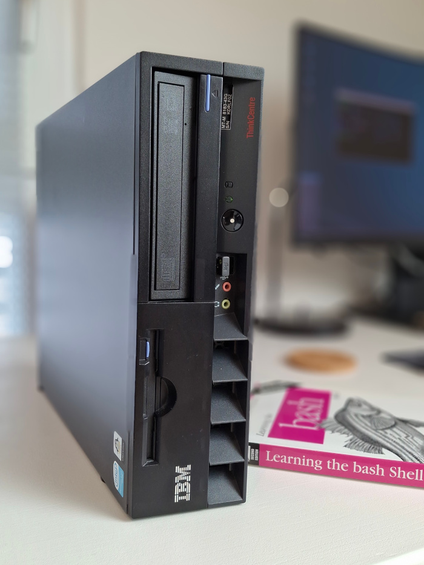
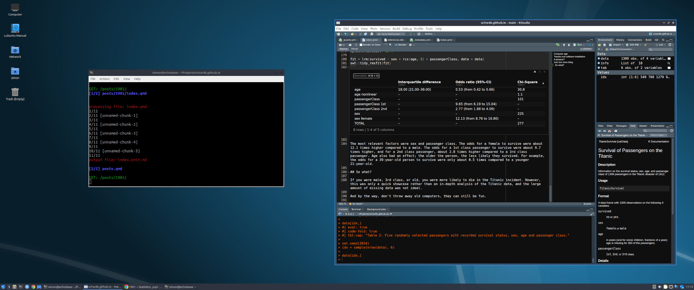

Code
info = system("neofetch --stdout", intern = TRUE)
idx = c(4, 15, 17, 16, 3, 5) # select items to show
info = strsplit(info, ": ")
tab = do.call("rbind", info[idx])
tab = as.data.frame(tab)
colnames(tab) = c("Type", "System Information")
tabSimon Schwab
October 20, 2024
It was 2004, I was a student, and at that time, I was really in love with Linux. One day, I saw an IBM commercial, “The Kid”. There were so many cool messages in this commercial; it kind of blew my mind. In the end, Muhammad Ali appeared and delivered the following line to the kid.
Speak your mind. Don’t back down. —Muhammad Ali
Since IBM loved Linux, too, I wanted to work for IBM. I applied for an internship and was eventually accepted. As I already started University, I had to take a break from my studies. Before I realized it, I was an intern at the data center of IBM Switzerland.
After six months, I could take a lot of stuff home. I worked on a large project for the first time. I reported to a manager and had deliverables, and I taught myself the command language Bash from reading Newham & Rosenblatt [1]. The things I learned back then still largely influence my daily interactions with computers today, which is by using a Unix type of shell program.
During my internship, I bought an IBM ThinkCentre S50. On this machine, I learned programming, completed my software engineering classes, and wrote my first computer program in Java.
It was 2024, a rainy day in October. I went to the basement to get rid of old stuff. I found my old IBM ThinkCentre S50 from 2004. It was still there.
What could you do with a 20-year-old computer in 2024? Not much, I guessed. The plan was to install a lightweight Linux distribution and the latest R, RStudio, and Quarto.
I also found a M52 in my basement, which was a slightly newer model from 2005. The two models, the S50 and the M52, were very similar; in fact, both had a Pentium 4 3.0 GHz processor and 1GB of memory. However, the S50 was the Intel Northwood architecture (32-bit), while the M52 was the Prescott architecture (64-bit). I didn’t want to install a 32-bit (i386) operating system. Major Linux distributions have dropped i386 support, for example, Ubuntu in 2019.
Thus, I decided to go for the M52; however, the S50 had a floppy drive. It would be a real shame to make a compromise here. Fortunately, the M52 had a tray for the floppy drive and a connector on the main board. I just had to install the floppy drive and replace the M52 front bezel with the one from the S50 because of the opening for the floppy drive.
The result was an M52 with the look of an S50, brilliant; see a photo in Figure 1.

I spent a little money to upgrade the machine from 1GB memory to 4GB memory (purchased online; CHF 7.50). I also replaced the hard disk, which was an HDD, with a modern SSD that I had as a spare. Then I installed Lubuntu 24.04 LTS, a lightweight Linux based on Ubuntu, R 4.4.1, and the latest version of RStudio and Quarto.
I collected some system information using the system() function which called neofetch from within this Quarto Blog post, see Table 1. Exactly, I wrote this blog post using the old IBM computer.
| Type | System Information |
|---|---|
| Host | 8215Y6G ThinkCentre M52 |
| CPU | Intel Pentium 4 3.00GHz (2) @ 1.500GHz |
| Memory | 1540MiB / 3222MiB |
| GPU | NVIDIA GeForce GT 610 |
| OS | Lubuntu 24.04.1 LTS x86_64 |
| Kernel | 6.8.0-48-generic |
I wondered why I only had 3GB of memory available, even though I installed 4GB. Looking at the technical specifications of the M53, I found the following line:
If 4GB of physical memory is installed approximately 3GB will be useable by the operating system. This is due to limitations from the address mapping of PCI busses and other system devices.
Well, that was a shame, but okay, at least there was nothing wrong on my side.
I made two tweaks to the Lubunu installation. First, I wanted to see the boot messages during startup instead of the Lubuntu logo.
sudo vim /etc/default/grub
# GRUB_CMDLINE_LINUX_DEFAULT='quiet splash'
GRUB_CMDLINE_LINUX_DEFAULT=""
sudo update-grubSecond, I wanted a profile image for my account to appear on the login screen; this can be done by creating a PNG image file in the home directory named .face.icon. My profile image had a resolution of 400x400, but it was a JPEG file; therefore, I had to convert it first. Also, the login manager SDDM needed to read this file, so I had to set the correct permissions:
I installed R directly from the R Project repository for the latest version. For that, the following entry in the sources.list was needed:
sudo vim /etc/apt/sources.list # edit file and add line below
deb https://cloud.r-project.org/bin/linux/ubuntu noble-cran40/It was important to add a security key to verify the R Project repository; see detailed instructions.
Then, I installed R as follows:
I downloaded the R Studio from the official website and installed it; I selected the newest available package, which was for Ubuntu 22/Debian 12. My first attempt to install RStudio failed because two other packages needed to be installed first:
sudo apt-get install libssl-dev
sudo apt-get install libclang-dev
sudo dpkg -i rstudio-2024.09.0-375-amd64.debFinally, I installed Quarto.
I logged into my new system and started RStudio (Figure 2). The computer took 1 minute and 2 seconds to boot, and RStudio took about 22 seconds to load. Since I rendered the documents from the command line using quarto preview, I could have just used a lightweight editor.

I wanted to know if I could do a statistical analysis with a modern operating system and state-of-the-art statistics software from 2024 on this 20-year-old machine, but it was possible. It was like the past and present finally coming together to create something new.
Past and present, they don’t matter. Now the future’s sorted out. —1901 (song by Phoenix)
The machine obtained a new life, and that was because Linux is awesome. Did I already mention that I wrote this blog post, including all the computations and statistical analyses, on this old IBM computer described here?
The title of this post is a song by Phoneix; the preview image of this post is a photo by Denny Müller on Unsplash.
I performed a statistical analysis of the Titanic data with the 20-year-old IBM computer. I used the TitanicSurvival data set from the carData package. I also used rms and my package swt because I wrote my own tidy functions to display regression results.
According to Wikipedia, 2240 people were on the Titanic, and 1517 (68%) persons died. However, the data only contained N=1309 persons with 500 (38%) deaths. Thus, there was a lot of missing data: I only had 58% of the persons and 33% of the deaths.
Anyway, the results below may have a high risk of bias. Maybe there was a better data set I could have used? The data are shown in Table 2.
| survived | sex | age | passengerClass | |
|---|---|---|---|---|
| Richards, Master. George Sibley | yes | male | 0.8 | 2nd |
| Cacic, Mr. Luka | no | male | 38.0 | 3rd |
| Vendel, Mr. Olof Edvin | no | male | 20.0 | 3rd |
| Karaic, Mr. Milan | no | male | 30.0 | 3rd |
| Andersen, Mr. Albert Karvin | no | male | 32.0 | 3rd |
| Eustis, Miss. Elizabeth Mussey | yes | female | 54.0 | 1st |
I wanted to predict survival based on passenger characteristics. I fitted a logistic regression model. The outcome was survived (“yes”), and the predictors were sex, age, and passenger class. The results are shown in Table 3.
| Interquartile difference | Odds ratio (95%-CI) | Chi-Square | d.f. | p-value | |
|---|---|---|---|---|---|
| age | 18.00 (21.00–39.00) | 0.53 (from 0.42 to 0.66) | 30.8 | 2 | < 0.001 *** |
| age nonlinear | – | – | 1.1 | 1 | 0.29 |
| passengerClass | – | – | 101 | 2 | < 0.001 *** |
| passengerClass 1st | – | 9.65 (from 6.19 to 15.04) | – | – | – |
| passengerClass 2nd | – | 2.77 (from 1.88 to 4.09) | – | – | – |
| sex | – | – | 225 | 1 | < 0.001 *** |
| sex female | – | 12.13 (from 8.76 to 16.80) | – | – | – |
| TOTAL | – | – | 277 | 5 | < 0.001 *** |
The most relevant factors were sex and passenger class. The odds for a female to survive were about 12.1 times higher compared to a male. The odds for a 1st class passenger to survive were about 9.7 times higher, and for a 2nd class passenger, about 2.8 times higher compared to a 3rd class passenger. Age also had an effect; the older the person, the less likely they survived. For example, the odds for a 39-year-old person to survive were only about 0.5 times compared to a younger 21-year-old.
If you were male, 3rd class, or old, you were more likely to die in the Titanic incident. However, this was only a quick showcase rather than an in-depth analysis of the Titanic data, and the large amount of missing data was not ideal. But I wanted to say something else.
I wanted to say, don’t throw away old computers. They can still be fun.
@misc{schwab2024,
author = {Schwab, Simon},
title = {1901},
date = {2024},
url = {https://www.statsyup.org/posts/1901/},
langid = {en}
}